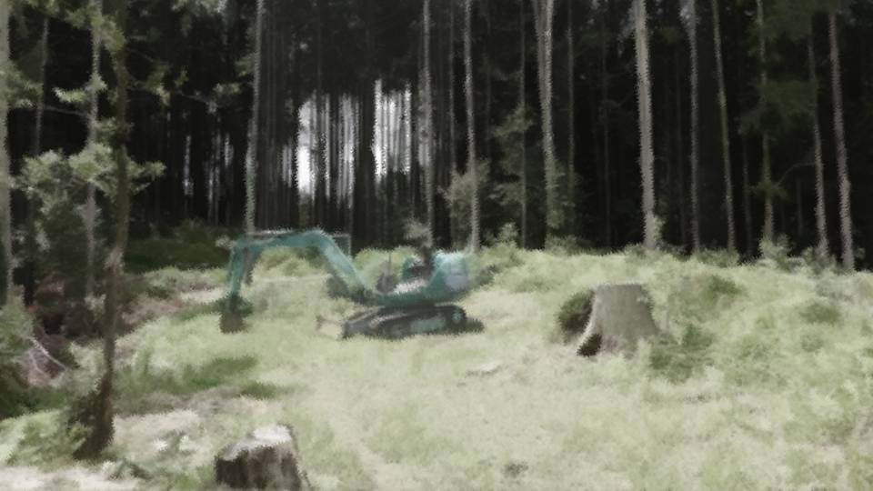
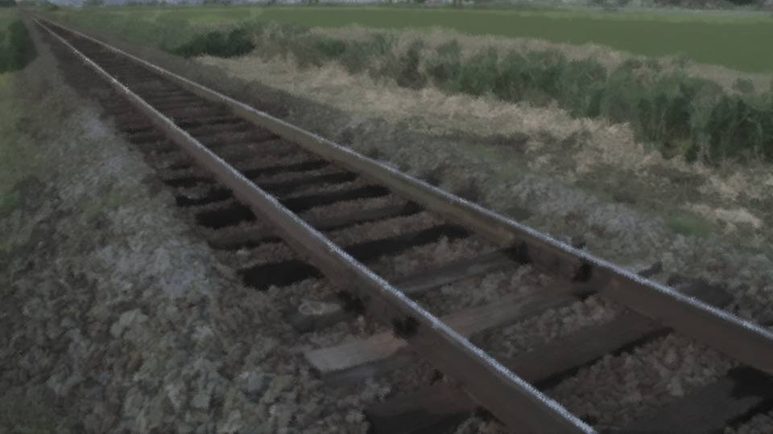

Script 000021AB

"Grand Witch-sama, are you really sure about this?"
One of the residents said it.
Before our eyes stood a crowd of outsiders.
One of the residents said it.
Before our eyes stood a crowd of outsiders.
They had come to dig up the cherry trees of this land.
Less than 10 days after Shinozaki-san came, the workers and machines to dig up the cherry trees had arrived.
Less than 10 days after Shinozaki-san came, the workers and machines to dig up the cherry trees had arrived.
An invasion of outsiders, and the loss of the cherry trees from which Droga is made.
The residents must have been unbearably anxious.
But this is as it should be.
Everything has its cause and effect.
A dreamlike drug such as Droga cannot possibly be of use to people without some price.
The residents must have been unbearably anxious.
But this is as it should be.
Everything has its cause and effect.
A dreamlike drug such as Droga cannot possibly be of use to people without some price.
In place of Droga, Shinozaki-san had provided us with several firearms.
With these, hunting would be easier even without Droga.
With these, hunting would be easier even without Droga.
That day when Shinozaki-san first came―


"So these are the crystals of the drug..."
"Please burn them and use the smoke. This sets down how they are made."
I gave Shinozaki-san the Droga crystals and the method of making it.
With this, Droga's effects would gain credibility, and matters would move along quickly.
"Please burn them and use the smoke. This sets down how they are made."
I gave Shinozaki-san the Droga crystals and the method of making it.
With this, Droga's effects would gain credibility, and matters would move along quickly.

And just as Shinozaki-san had said, a railway really was built.
Its purpose, of course, was to transport the many cherry trees.
With funds on such a scale, had Shinozaki-san truly been from the government after all?
Its purpose, of course, was to transport the many cherry trees.
With funds on such a scale, had Shinozaki-san truly been from the government after all?
―In about half a year, every cherry tree but the one at the Niimura main house had been dug up and carried away.
In any case, the unraveling of Droga would now move forward.
In any case, the unraveling of Droga would now move forward.